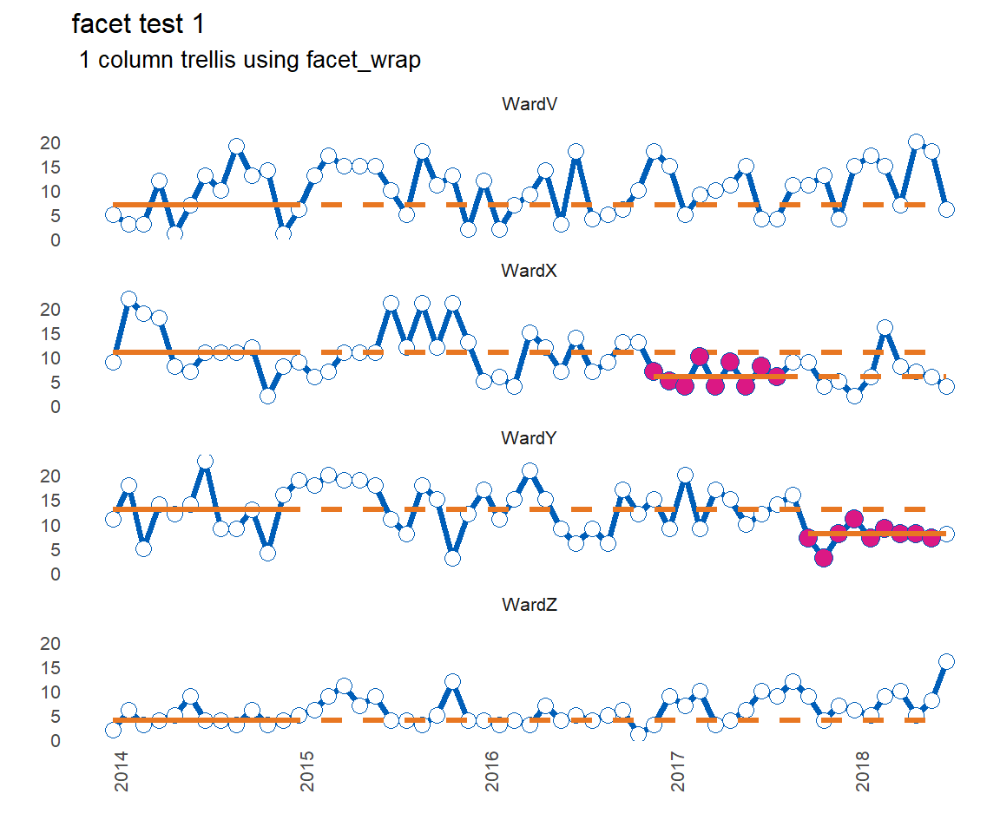
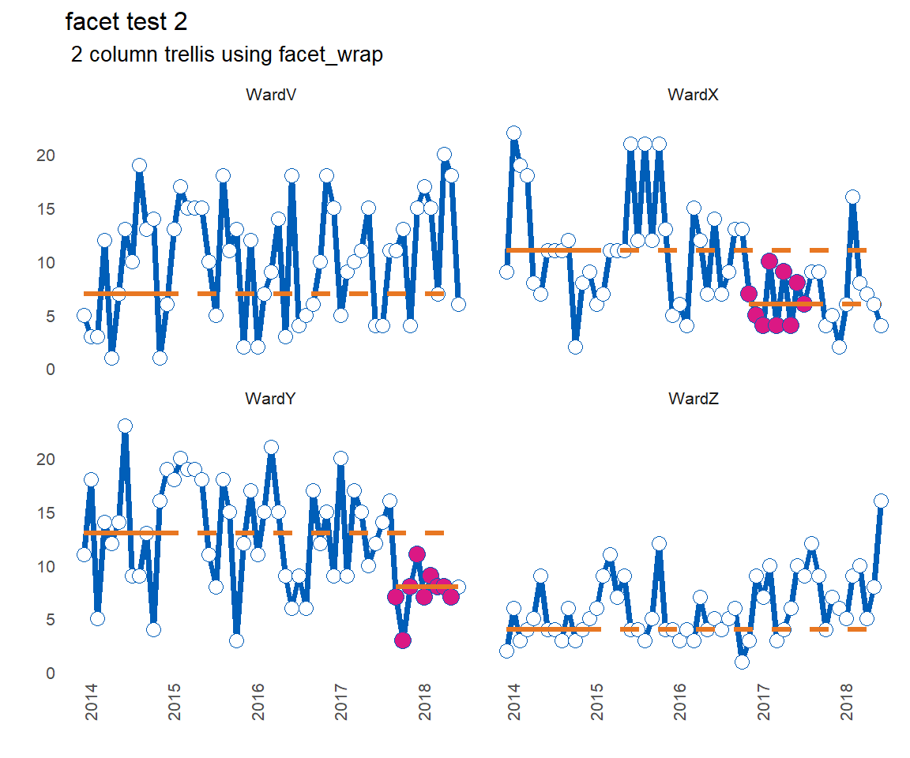

vignettes/how-to-create-faceted-runcharts.Rmd
how-to-create-faceted-runcharts.RmdThe rationale for the package is to analyse multiple runcharts at once. More importantly, the package will identify a run of n successive points on the desired side of the median line, and will recalculate / rebase the median accordingly. Each time a run occurs, the median will be rebased. This helps to track improvements over time.
The default is to plot a faceted plot, allowing ggplot2 to handle the axis limits. You can specify the number of columns in the faceted plot, or let ggplot2 do its thing.
Here are the function arguments and defaults. A default run of 9 is specified as that is the length of run used by the IHI for it’s patient safety initiatives worldwide.
#function arguments and defaults
library(runcharter)
runcharter(df = signals,
med_rows = 13,
runlength = 9,
chart_title = NULL,
chart_subtitle = NULL,
direction = "below",
faceted = TRUE,
facet_cols = NULL)library(runcharter)
p <- runcharter(signals,
med_rows = 13,
runlength = 9,
chart_title = "facet test 1",
chart_subtitle = " 1 column trellis using facet_wrap",
direction = "below",
faceted = TRUE,
facet_cols = 1)
library(runcharter)
p <- runcharter(signals,
med_rows = 13,
runlength = 9,
chart_title = "facet test 2",
chart_subtitle = " 2 column trellis using facet_wrap",
direction = "below",
faceted = TRUE,
facet_cols = 2)
This package makes no attempt to identify or highlight ‘trends’ (consecutively increasing or decreasing points) or shorter ‘shifts’ of runs below the median. In 8 years of working with QI data, I very rarely see trends, and when they do appear, they tend to result after a period of process degradation, when the process begins to return back to its natural median state.
Research by qicharts2 author Jacob Anheoj shows that the trend rule is not reliable.
The package will only identify a run in one direction at a time. In other words, if you are trying to reduce adverse events, improvement will be evidenced with a run below the median. Therefore, you would not rebase the median if a run of points above the median was observed.
If you want to rebase in both directions and / or also apply the rules for trend then you should use Joseph Adam’s ‘runchart’ package.
“But [insert QI expert name here] says you should not automatically rebase the median unless you know the signal is genuine”.
Yes, and no.
Truth is, sometimes, there is too much information being collected, and the task of manually performing this analysis is very time consuming, especially if you have to make manual adjustments to spreadsheets / databases / graphical outputs, to deadlines, whilst battling traditional BI tools that were only ever designed for bar and pie charts.
I have over 2000 run charts that I need to produce and analyse. I needed this solution. I’m confident that in time others will realise they need it too.
Use the package to do the analysis, take the outputs, and build your own plots. Or assign the function outputs to a variable, retrieve the runchart object, and add additional ggplot2 syntax to modify it to suit your preferences. I’ve let ggplot2 handle faceting and the axis limits in order keep the function simple. This means you can add additional scale syntax to control date breaks, limits and formats.